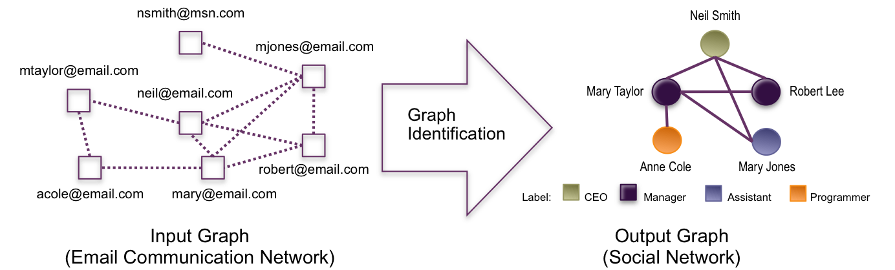

Collective Graph Identification |
|
| Jump to: Participants Publications Related Projects Dataset Software |
 |
Data describing networks (communication networks, transaction networks, disease transmission networks, collaboration networks, etc.) is becoming increasingly ubiquitous. While this observational data is useful, it only hints at the actual underlying social or technological structures which give rise to the interactions. For example, an email communication network provides useful insight, but is not the same as the "real" social network among individuals. In this paper, we introduce the problem of graph identification, i.e., the discovery of the true graph structure underlying an observed network. We cast the problem as a probabilistic inference task, in which we must infer the nodes, edges, and node labels of a hidden graph, based on evidence provided by the observed network. This in turn corresponds to the problems of performing entity resolution, link prediction, and node labeling to infer the hidden graph. While each of these problems have been studied separately, they have never been considered together as a coherent task. We present a simple yet novel approach to address all three problems simultaneously. Our approach, called C³, consists of coupled conditional classifiers that are iteratively applied to propagate information among solutions to the problems. We empirically demonstrate that C³ is superior, in terms of both predictive accuracy and runtime, to the state-of-the-art probabilistic approaches on three real-world problems.
Galileo Namata, PhD Student, Computer Science
Stanley Kok, Post-Doc, UMIACS
Lise Getoor, Assistant Professor, Computer Science / UMIACS
Galileo Namata, Stanley Kok, and Lise Getoor. Collective Graph Identification. ACM SIGKDD International Conference on Knowledge Discovery and Data Mining, 2011. [BibTex] [PDF]
PSL
Code for this project will be released as part of the GAIA software library.